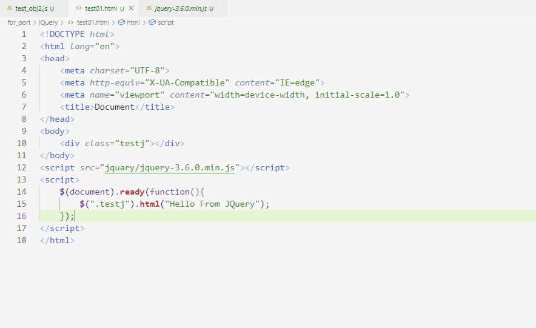
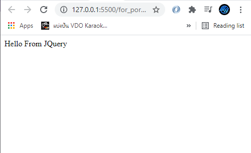

jQuery
jQuery จะมีทุกอย่างที่เหมือนกับ JavaScript เนื่องจาก JavaScript เป็นภาษาที่ค่อนข้างใช้ยากจึงมี jQuery มาจัดการในเรื่องนี้ ซึ่งถ้าหากเราต้องการจะใช้ jQuery จำเป็นจะต้องไป Download ที่ web site https://jquery.com/download/ แล้วคลิ๊ก link ตามรูปภาพด้านล่าง

เมื่อโหลดเสร็จให้ทำการ unzip และเอาไว้ใน project ที่จะใช้จากนั้นให้ทำการทดสอบโดยการลอง import jQuery ที่พึ่งโหลดมาโดยนำ path ที่อยู่มาใส่ใน tag script src ดังรูปด้านล่าง

โค้ดด้านบนเป็นการทดสอบ jQuery โดยให้ไปแสดงผลใน div class testj ซึ่งในการทำแบบนี้ใน JavaScript จำเป็นจะต้องมีโค้ดเยอะกว่านี้ แต่สำหรับ jQuery สามารถจบในบรรทัดเดียวและได้ผลลัพธิ์ตามรูปด้านล่าง

ซึ่งแสดงผลได้ถูกต้องต่อมาเราจะทดสอบโดยการ get json โดยใช้ jQuery โดยการนำข้อมูลจาก web site อื่นมาแสดงข้อมูลใน page ของเราโดยไม่ต้องโหลดหน้า page ใหม่หรือเรียกว่า Ajax

ผลลัพธิ์ที่ได้จะปรากฏข้อมูลที่ดึงมาในรูปแบบของตารางด้านซ้ายคือ key และด้านขวาคือ value